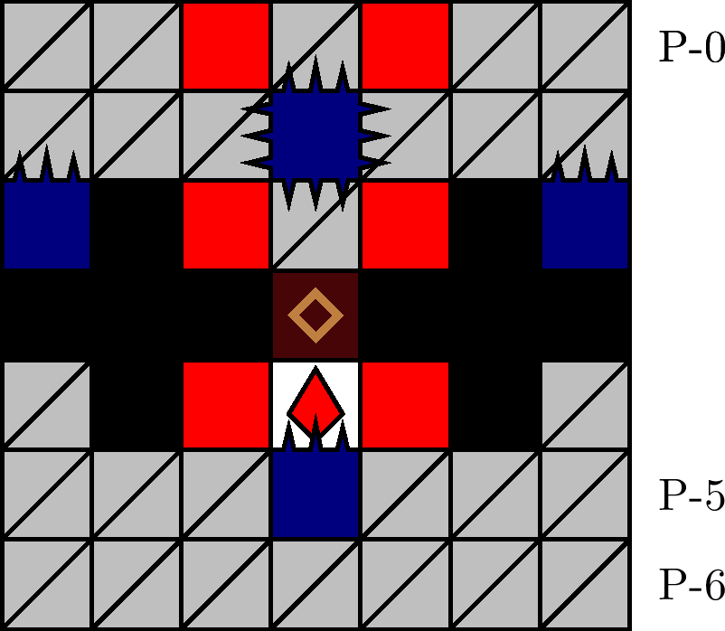

一般指針
エリア・バリケード

指針
バリケードは， ±1 列から直下掘りで進入し，複数回にわたって塊 P-(3, 0) を吸引することで通過します．
解説
バリケードとは，図 3.2.8.1 のエリアを指します． 700 m型の 32 行目に確率で出現します． P-1 行目の四針の配列によって同定されます． P-3 行目の狭窄のため，経路は実質的に一意的です．
±1 列の直下掘りによる進入が定型です（「700 m型指針」も参照）．犬の現在位置によらず， ±1 列（そのうち少なくとも経路となる列）上方の安定を絶対に確保したうえで潜行を続けます． P-2 行目に到達した時点で四針は針猶予状態にあるので， ±1 列に落下予定ブロックが残っている場合，移動（特にサイドステップ）による回避は極めて困難または不可能です．パリィによる耐久は，（特に落下予定ブロックが複数ある場合）圧迫のリスクが極めて高く，塊に対しては有効でないため，可能な限り避けるべきです
塊 P-(3, 0) に対する 5 回の吸引を，四針が起動する前に完了することはできません．通常状態における塊の破壊動作の代表例は，次の順に安全です:
- 針の第一格納後に 3 回，第二格納後に 2 回吸引する．
- 針の第一格納後に 1/2/4 回，第二格納後に 4/3/1 回吸引する．
- 針の第一起動前に 1/2/3 回，第一格納後に 4/3/2 回吸引する．
- 針の第一格納後に 5 回吸引する．（高 FPS と理論的な操作が必要）
例 3 の動作が最速です．例 3 の実行には， P-2 行目へ急降下しないことが必要です．なお，一度に 4 回以上の吸引をする場合は，吸引リズムが適切または理論的でなければ針猶予に間に合わず刺突を受けるため注意します．上記以外の例は時間的に迂遠です．
塊破壊後の急降下は不要だと思われます．
注記: 理論的には， 3 マス以上の急降下によって四針の直上へ着地することで塊 P-(3, 0) を破壊することができますが，この状況が発生する確率は低く，四針直上への着地は危険ですから（「愚形・四針直上（針）」も参照），狙いません．もし状況が発生した場合は，焦らずにエリアを潜行します．このとき，四針の針猶予と ±1 列の状況に注意します．また，硬直を避けるために急降下しません．
無敵状態の場合でも，エリアへは基本的に通常どおり進入します．無敵状態の残り時間が充分長いと判断される場合は，無敵状態で塊を破壊できるよう迅速に潜行します．これを可能にするためにも， ±1 列の直下掘りによるエリアへの進入は重要です．
バリア状態かつ低寿命のときは，四針の針判定を回避せずに塊の吸引を継続してザクロを取得することも有効です．「バリアを犠牲に」も参照してください．